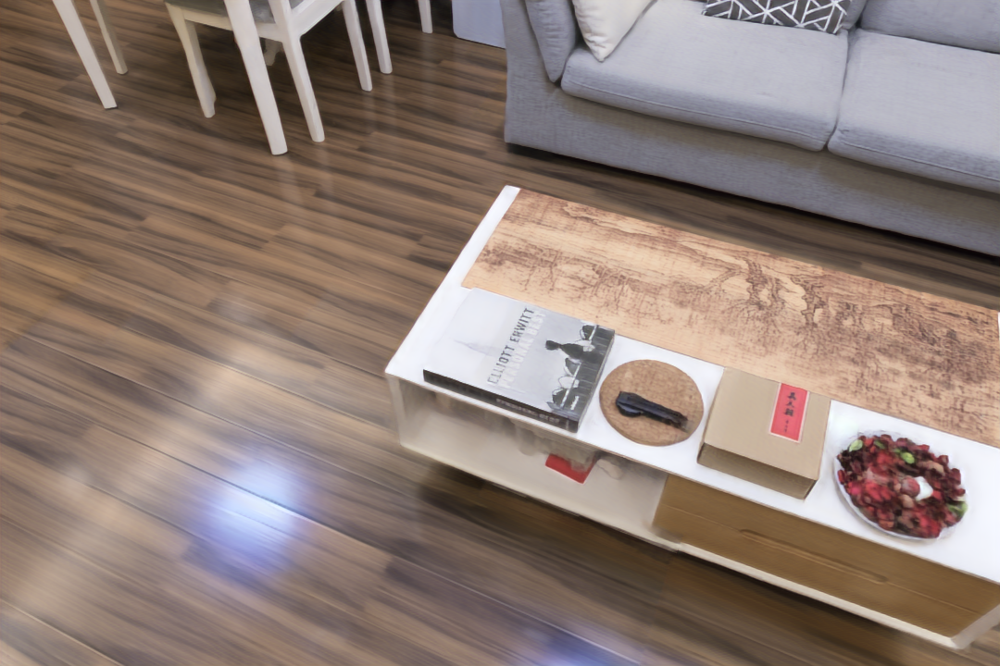
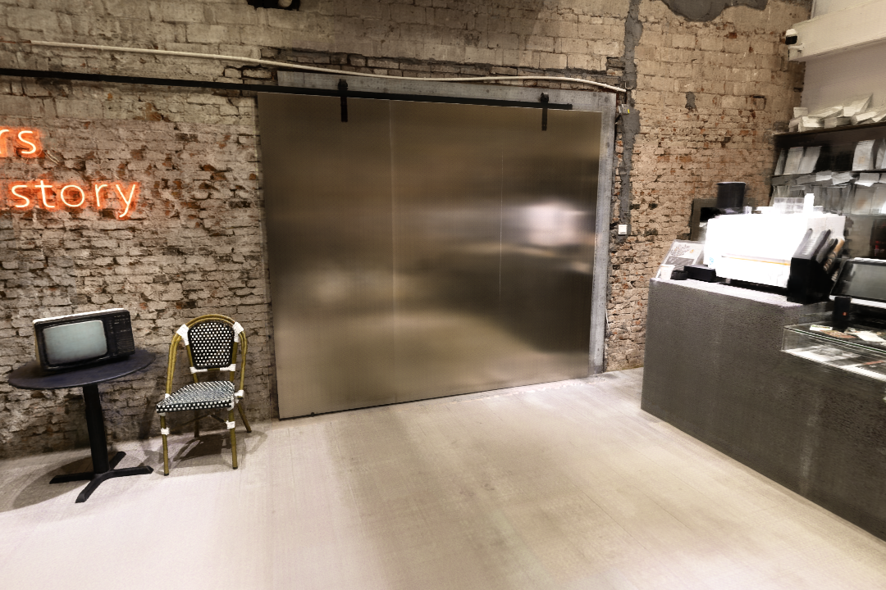
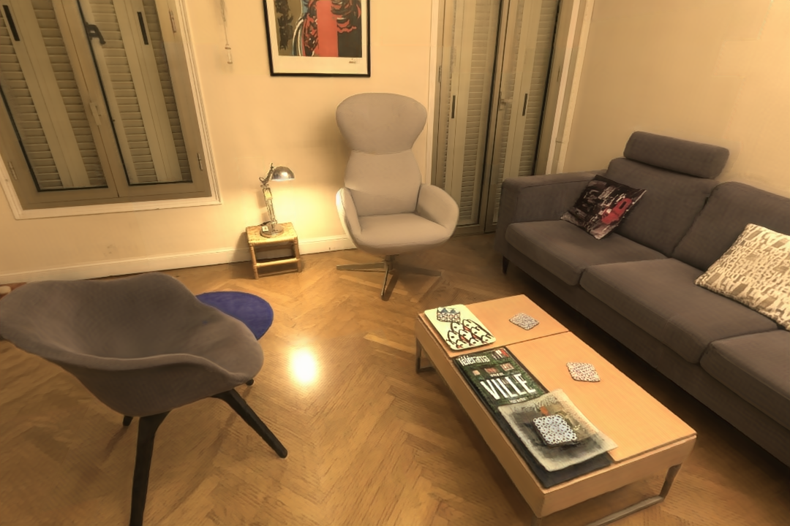
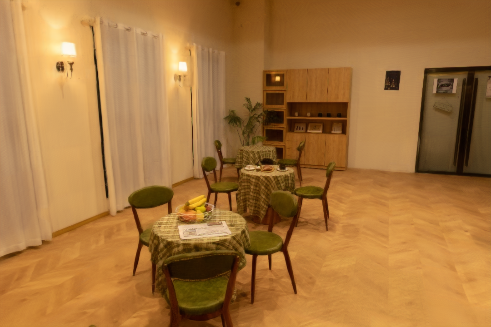
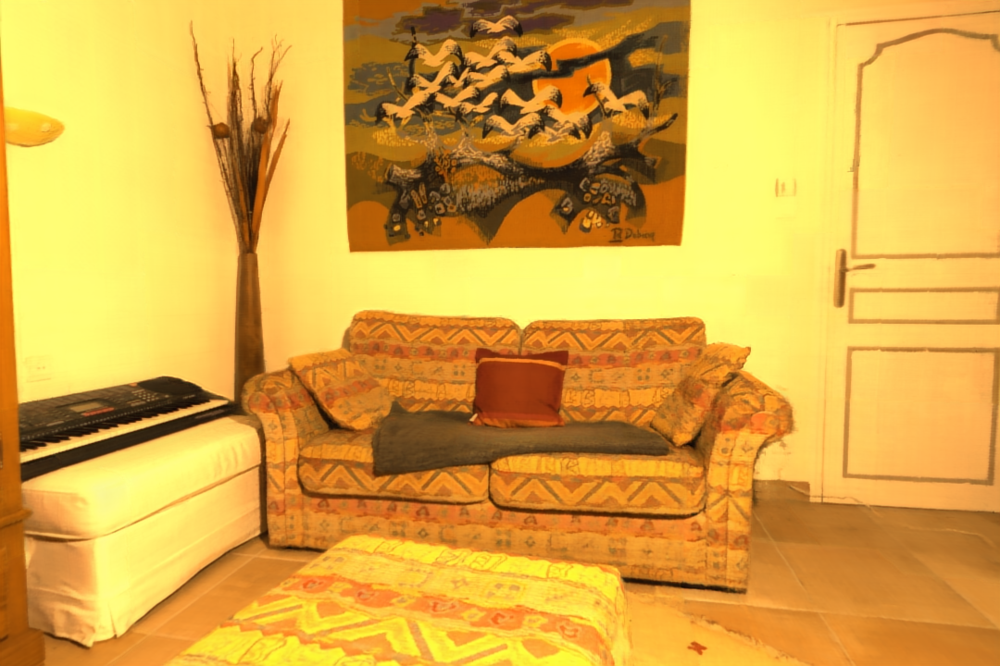

Scalable Neural Indoor Scene Rendering





Abstract
We propose a scalable neural scene reconstruction and rendering method to support distributed training and interactive rendering of large indoor scenes. Our representation is based on tiles and a separation of view-independent appearance (diffuse color and shading) and view-dependent appearance (specular highlights, reflections), each of which predicted by lower-capacity MLPs. Such a two-MLP based representation allows us to leverage the phenomena that view-dependent surface effects can be attributed to a reflected virtual light at the total ray distance to the source. This lets us handle sparse samplings of the input scene where reflection highlights do not always appear consistently in input images. Further, our scheme allows tile MLPs to be trained in parallel and still represent complex reflections through a two-pass training strategy. This is enabled by a background sampling strategy that can augment tile information from a proxy global mesh geometry and tolerate typical errors from reconstructed proxy geometry. We show interactive free-viewpoint rendering results from five scenes. One of them covers areas of more than 100 ㎡. Experimental results show that our method produces higher-quality renderings than a single large-capacity MLP and other recent baseline methods.

Interactive Rendering & Distributed Training
The rendering time for a frame of resolution is 50ms on average.
Comparisons
Our method shows improved rendering results for specular reflection and temporal coherence over baselines
Full Video